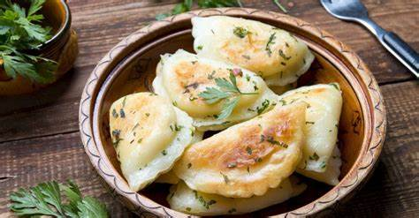

Dumplings

Description
The most popular of the entire pierogi group, pierogi Ruskie are crescent-shaped dumplings filled with a mixture of potatoes, twaróg (most similar to farmer cheese, but also curd, quark, and cottage cheese), and sautéed onions. The dough is made with flour, salt, and water, but some recipes also include eggs and milk.
The dumplings are boiled and served topped with either cracklings, bacon, or fried onions or served alongside sour cream. Optionally, after boiling, the pierogi can be sautéed in butter or oil until crispy.
Ingredients
DOUGH
- 4 cups (480g) flour
- 1 cup + 2 tbsp + 2 tsp (280 ml) water
- 3 tbsp butter or vegetable oil, optional
- 1 tsp salt
FILLING
- 2.2 lbs (1kg) potatoes, washed and peeled
- 8.5 oz (240g) onion, diced
- 2 tbsp frying oil
- 17.5 oz (500g) full-fat (tłusty) Polish twaróg cheese (or farmer cheese)
- salt and black pepper, to taste
Steps
- Wash and peel the potatoes.
- Bring a large pot of salted water to a boil. Add the potatoes and cook until soft, then drain. Mash the potatoes and set them aside to cool.
- Add oil to a large frying, then sauté the onion over medium-high heat until translucent.
- Add the potatoes, the cheese, the onions, and the salt and pepper to a large bowl. Knead with your hands until combined.
- Grab a teaspoon of the filling and shape it into a ball. Do this until you used up all the filling. If the filling falls apart and won't take shape, place it in the refrigerator for half an hour.
- To make the dough, first, add the salt and the flour to a large bowl and mix.
- Then, heat the water and the butter, if using, in a large saucepan until close to boiling — the temperature should be around 176-194°F/80-90°C.
- Pour into the bowl with flour and stir with a wooden spoon until combined. Then, knead for 5 minutes until you have a smooth, pliable dough that is not sticky. If needed, add more flour or water to get the right consistency.
- Wrap in cling film and let rest for half an hour.
- Divide the dough into four parts. Lightly flour the working surface, place one part of dough onto it, then roll it out to a 1/16 inch/2mm thickness. If the dough won't roll out easily, leave it to rest for 5-10 minutes, then try again.
- Using either a cup, a pierogi cutter, or a pastry cutter, cut out rounds of dough 2.8 inch/7cm in diameter.
- Top each round with a ball of filling, then fold the dough over the filling to make a crescent shape. Press or crimp along the edges to seal.
- Gather the dough scraps and cover them.
- Place a cloth on a working surface, then lightly sprinkle it with flour. Arrange the pierogi on top of the cloth, then cover them with another cloth to prevent them from drying out.
- Do the same with the three remaining pieces of dough.
- Fill a large pot with water and season it generously with salt. Bring the water to a boil.
- Cook the pierogi in batches. Drop a batch of pierogi dumplings into the boiling water. Once they come to the surface, cook for 2 minutes, then remove them with a slotted spoon. Repeat this until you've cooked all the pierogi.
- Drain the pierogi so they are dry. Optionally, at this point, you can also shortly fry them in butter to make them a bit crispy.
- Serve drizzled with melted butter. However, pierogi can also be served sprinkled with cracklings, fried onions, or bacon, or alongside sour cream.
I love this dumplings served fried from the pan.Crispy outside and soft inside. It's mouth melting.